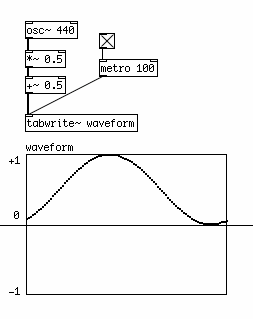
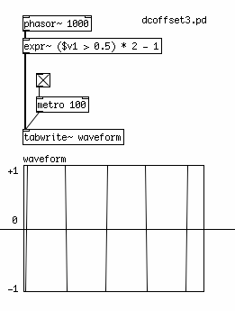
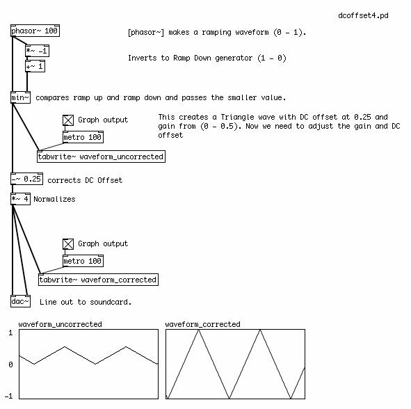
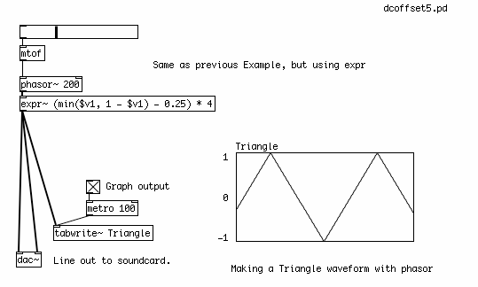
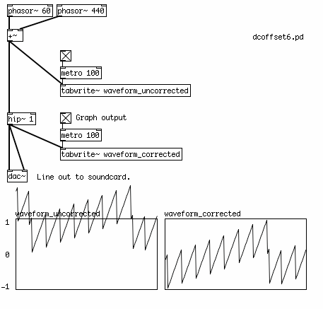

Normalizing & DC Offset
In order to optimize a signal for playback, it is often necessary to make some final adjustments to the gain of the signal to fit it into certain ranges which maximize the dynamic range, or the difference between the loudest and the quietest parts of the signal. Two very important processes are to remove the DC offset in the signal, and to normalize the signal.
DC offset is when a waveform has unequal amounts of signal in the positive and negative domains. Normally, we want the signal to have a middle point at zero to allow a maximum dynamic range. While DC offset can be useful in the control of some kinds of synthesis (such as Amplitude Modulation or Frequency Modulation), it is generally considered undesirable in an audio signal.

An extreme example of DC offset: the waveform is only in the positive domain.
And to normalize an audio signal means to adjust its gain to peak at the maximum the sound card allows before clipping (i.e. -1 and 1). This is done to maximize the dynamic range of the signal when it is played back.
For example, by default the [phasor~] object ramps from 0 to 1. The middle point (i.e. the DC Offset) is 0.5, and its dynamic range (the difference between the minimum and maximum values) is half the biggest possible. In order to get a waveform which uses the full dynamic range of the soundcard without any DC offset, we need to multiply its signal by two in order to double the dynamic range. This is the normalizing part. Since now the DC Offset is 1,Then we remove the DC offset by subtracting 1 from every sample value, resulting in a waveform which crosses zero at the midpoint of its ramp from -1 to 1.

Likewise, the same can be done with the square waves we created by comparing the output of [phasor~] with 0.5 with a simple logic operation. The resulting 0 or 1 can be normalized to -1 and 1 with the same audio math.

Since we are using the [expr~] object to create a mathematical expression for the creation of the square wave anyway, we can include the normalizing and dc offset correction directly into that expression like this:

Here, we revisit the sawtooth wave generator, made from inverting the ramp of [phasor~], comparing it with the original ramp and deriving the minimum values. The sawtooth waveform which results has a DC offset of 0.25 and a gain from 0 to 0.5. By subtracting the 0.25 offset and multiplying by 4, the waveform is DC offset corrected and normalized.

The same process can be reduced to a single [expr~] object which compares the ramps, performs the DC offset correction and normalizes the resulting waveform.

A DC Offset is a constant value, this means it has a frequency of 0Hz, because it never changes. A high pass filter can be used to remove the DC offset of a signal or combination of signals by removing frequencies below its cutoff frequency. In this case, the [hip~] object is set to attenuate frequencies at or below 1 Hz, resulting in a waveform centered on zero. It will not, however, normalize the signal afterward, nor will it prevent clipping (values greater than -1 or 1 which cannot be reproduced by the soundcard).

Many Pd programmers use a [hip~ 1] object just before each channel of the [dac~] to eliminate any accidental DC offset which may have accumulated in the audio signals of their patch.
Finally, a limiter can be used to automatically reduce the overall gain whenever the signal passing through it exceeds a certain level. In a so-called "lookahead limiter", the audio signal is delayed for a certain amount of time while the limiter decides if the signal needs to be reduced and by how much. The [limiter~] object in Pd is useful for this purpose, while the [z~] object delays the signal being measured long enough for the [limiter~] to output the amplification factor needed to keep the audio signal within bounds. Please check the help file for [limiter~] for a wide range of uses for this object.